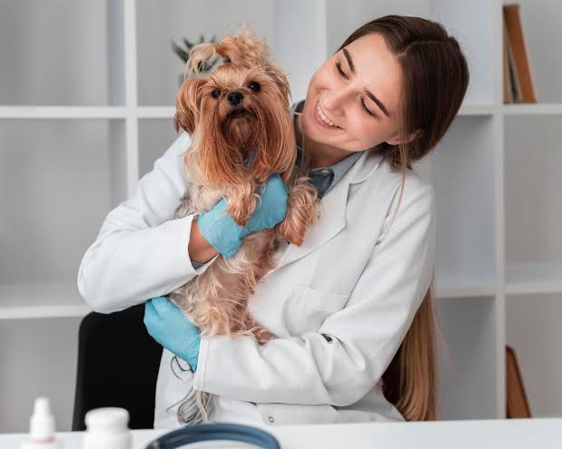
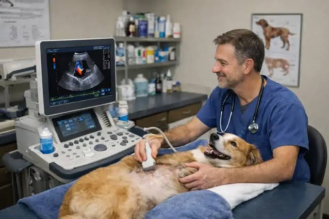
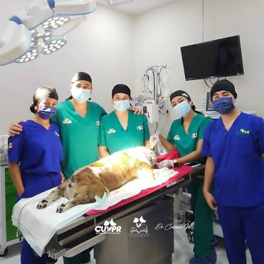
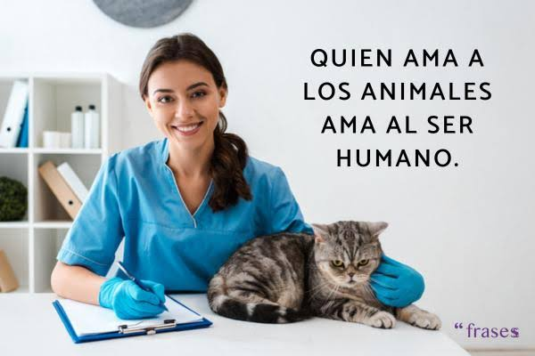

Quienes somos

En Veterinaria La Mary, somos un centro de salud animal comprometido con brindar una atención médica integral y de alta calidad para las mascotas de nuestra comunidad. Con años de trayectoria, combinamos experiencia científica, tecnología adecuada y, por sobre todo, un profundo amor por los animales, garantizando que cada paciente reciba un trato digno, seguro y personalizado en cada etapa de su vida.
Nuestra Mision

Proteger, restaurar y mantener la salud y el bienestar de los animales de compañía. Nos dedicamos a ofrecer soluciones médicas eficientes mediante un equipo profesional altamente capacitado, brindando tranquilidad a las familias a través de la prevención, el diagnóstico certero y un cuidado compasivo.
Nuestra Vision

Consolidarnos como la clínica veterinaria de referencia en la región, siendo reconocidos por nuestra excelencia médica, la constante actualización de nuestros servicios y la calidez humana de nuestro equipo. Aspiramos a construir un entorno donde las mascotas y sus tutores encuentren un espacio de confianza absoluta y contención.
Nuestros Valores

Compromiso Animal: La salud y la calidad de vida de los pacientes son nuestra máxima prioridad.
Ética Profesional: Actuamos con total honestidad, transparencia y responsabilidad médica.
Calidez y Empatía: Entendemos el valor del vínculo familiar con las mascotas y ofrecemos un trato cercano y contenedor.
Excelencia: Buscamos la mejora continua de nuestras destrezas clínicas y de nuestras instalaciones.